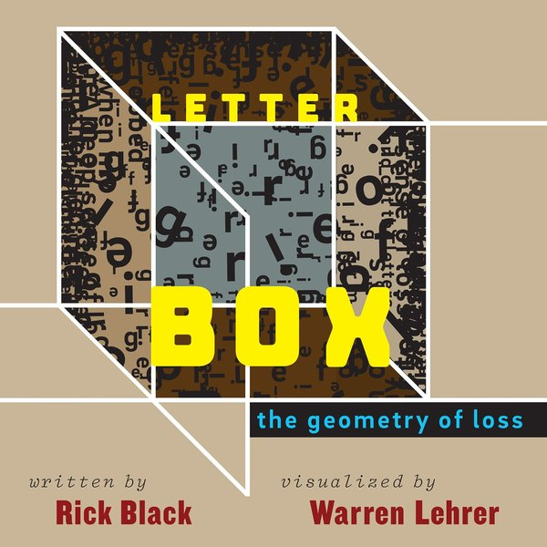
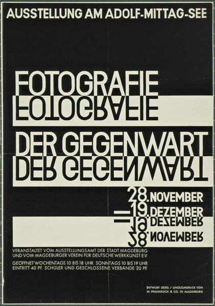

CRVI000775Brownjohn, Chermayeff & Geismar - That New York
About U.S. — Experimental Typography by American Designers · The Composing Room · 1960
About U.S. — Experimental Typography by American Designers · The Composing Room · 1960

CRVI001055Takenobu Igarashi - Alphabet
Published by the Takenobu Igarashi Archive
Published by the Takenobu Igarashi Archive

CRVI001056Takenobu Igarashi - Cover for IDEA No. 130
Magazine cover · Seibundo Shinkosha, Tokyo · 1975
Magazine cover · Seibundo Shinkosha, Tokyo · 1975

CRVI001109Constantin Aladjalov - International Exhibition of Modern Art, arranged by the Société Anonyme for the Brooklyn Museum
Exhibition catalogue cover · Brooklyn Museum, November–December 1926 · 1926
Exhibition catalogue cover · Brooklyn Museum, November–December 1926 · 1926

CRVI001110unattributed - Grafisk Revy, nummer 19
Cover, fackteknistkt specialnummer · Bokbinderi-Arbetaren / Svensk Typograftidning · 1965
Cover, fackteknistkt specialnummer · Bokbinderi-Arbetaren / Svensk Typograftidning · 1965

CRVI001111Rudy VanderLans - Emigre No. 5, Edizione Italo-Francese
Magazine cover · 43 × 29.1 cm, 30 pages · Emigre Inc., Berkeley · 1986
Magazine cover · 43 × 29.1 cm, 30 pages · Emigre Inc., Berkeley · 1986

CRVI001112El Lissitzky - Die Kunstismen / Les Ismes de l’Art / The Isms of Art, 1914–1924
Book cover · edited by El Lissitzky and Hans Arp · Eugen Rentsch, Erlenbach-Zürich · 1925
Book cover · edited by El Lissitzky and Hans Arp · Eugen Rentsch, Erlenbach-Zürich · 1925

CRVI001391Emmett McBain - The Playboy Jazz All-Stars
Designed by Emmett McBain · Playboy Records · 1957 · 1957
Designed by Emmett McBain · Playboy Records · 1957 · 1957

CRVI002412Filippo Tommaso Marinetti - TUMB TUMB / GRANG GRANG / ZZZANG-ZZZANG-TUMB

CRVI002414Filippo Tommaso Marinetti - Zang Tumb Tuuum
1915
1915

CRVI002415Filippo Tommaso Marinetti - Zang Tumb Tumb: Adrianopoli Ottobre 1912: Parole in Libertà (cover)
1914
1914

CRVI002416Filippo Tommaso Marinetti - Vive la France
1914-15
1914-15

CRVI002417Filippo Tommaso Marinetti - Words and Freedom (Parole in libertà)
1914
1914

CRVI002425Gustav Klutsis - Propaganda Stand (Workers of the World Unite)
1922
1922

CRVI002435Non-Format - nyMusikk — Høst 2025
2025
2025

CRVI002437Non-Format - Lara Jones — Dome
2024
2024

CRVI002468The Designers Republic - Hardwar — Official Souvenir
1998
1998

CRVI002469Warp Records - Blech (Japanese edition)

CRVI002470Pop Will Eat Itself - X Y & Zee

CRVI002707Mitsuo Katsui - 晴れる文字 (Letters and Sunlight)

CRVI002708Mitsuo Katsui - 生かす文字 (Letters and Life)

CRVI002720Takenobu Igarashi - AIGA Detroit presents Takenobu Igarashi and his Architectural Alphabet

CRVI002754Warren Lehrer - Letter Box: The Geometry of Loss

CRVI002813Walter Dexel - Fotografie der Gegenwart
1929
1929

CRVI002863Rosmarie Tissi - Tips